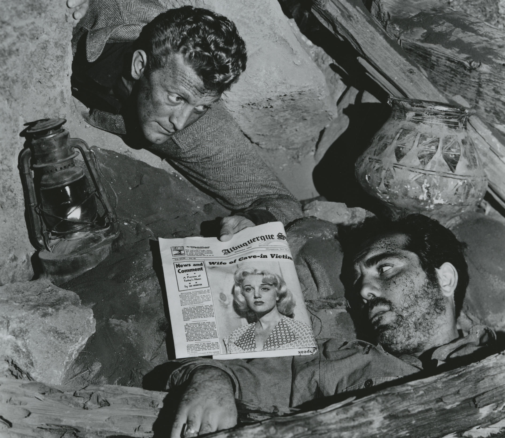

The 1920's:
Honorable Mentions
The 1930's:
-
City Lights

-
Olympia

-
L'Atalante

-
Modern Times

-
M
- Directed by Fritz Lang

Honorable Mentions
The 1940's:
Honorable Mentions
- Scarlet Street
- The Stranger
- The Killers
- The Bicycle Thief
The 1950's:
Words about the 1950's
-
High Noon
(1952) - Directed by Fred Zinnemann

-
Throne of Blood
(1957) - Directed by Akira Kurosawa

-
Night and Fog
(1956) - Directed by Alain Resnais

-
Touch of Evil
(1958) - Directed by Orson Welles

-
Rear Window
(1954) - Directed by Alfred Hitchcock

-
The Bridge on the River Kwai
(1957) - Directed by David Lean

-
Rashomon
(1950) - Directed by Akira Kurosawa

-
The Wages of Fear
(1953) - Directed by Henri-Georges Clouzot

-
Ace in the Hole
(1951) - Directed by Billy Wilder

-
The Night of the Hunter
(1955) - Directed by Charles Laughton

Honorable Mentions
- Sunset Boulevard (1950) - Directed by Billy Wilder
- On the Waterfront (1954) - Directed by Elia Kazan
- Hiroshima, mon Amour (1959) - Directed by Alain Resnais
- The Killing (1956) - Directed by Stanley Kubrick
The 1960's:
- The Manchurian Candidate (1962) - Directed by John Frankenheimer
- À bout de souffle (Eng: Breathless) (1960) - Directed by Jean-Luc Godard
- The Battle of Algeirs (1966) - Directed by Gillo Pontecorvo
- Le Mépris (Eng: Contempt) (1963) - Directed by Jean-Luc Godard
- Night of the Living Dead (1968) - Directed by George Romero
- Dr. Strangelove (1964) - Directed by Stanley Kubrick
- Psycho (1960) - Directed by Alfred Hitchcock
- The Good, the Bad and the Ugly (1966) - Directed Sergio Leone
- The Wild Bunch (1969) - Directed by Sam Peckinpah
- 2001: A Space Odyssey (1968) - Directed by Stanley Kubrick


Honorable Mentions
- Bonnie & Clyde (1967) - Directed by Sam Peckinpah
- Once Upon a Time in the West (1968) - Directed by Sergio Leone
- Goldfinger (1964) - Directed by Guy Hamilton
- Repulsion (1965) - Directed by Roman Polanski
The 1970's:
- Solaris (1972) - Directed by Andrei Tarkovsky
- Eraserhead (1977) - Directed by David Lynch
- The Wicker Man (1973) - Directed by Robin Hardy
- El Topo (1970) - Directed Alejandro Jodorowsky
- The Texas Chain Saw Massacre (1974) - Directed by Tobe Hooper
- Alien (1979) - Directed by Ridley Scott
- The Conversation (1974) - Directed by Francis Ford Coppola
- F for Fake (1973) - Directed by Orson Welles
- Chinatown (1974) - Directed by Roman Polanski
- Suspiria (1977) - Directed by Dario Argento


Honorable Mentions
- Annie Hall (1977) - Directed by Woody Allen
- Blazing Saddles (1974) - Directed by Mel Brooks
- Dog Day Afternoon (1975) - Directed by Sidney Lumet
- Aguirre, the Wrath of God (1972) - Directed by Werner Herzog
- Halloween (1978) - Directed by John Carpenter
- Hausu (Eng: House) (1977) - Directed by Nobuhiko Obayashi
The 1980's:
- Platoon (1986)- Directed by Oliver Stone
- Evil Dead II (1987) - Directed by Sam Raimi
- Re-animator (1985) - Directed by Stuart Gordon
- The Terminator (1984)- Directed by James Cameron
- Ran (1985) - Directed by Akira Kurosawa
- Aliens (1986) - Directed by James Cameron
- The Shining (1980)- Directed by Stanley Kubrick
- The Thing (1982) - Directed by John Carpenter
- Do the Right Thing (1989) - Directed by Spike Lee
- Raging Bull (1980) - Directed by Martin Scorsese


.png/revision/latest?cb=20150721135952)


Honorable Mentions
- Die Hard (1988) - Directed by John McTiernan
- An American Werewolf in London (1981) - Directed by John Landis
The 1990's:
- Reservoir Dogs (1992) - Directed by Quentin Tarantino
- Se7en (1995) - Directed by David Fincher
- Before Sunrise (1995) - Directed by Richard Linklater
- Boogie Nights (1997) - Directed by P.T. Anderson
- Dazed and Confused (1993) - Directed by Richard Linklater
- Magnolia (1999) - Directed by P.T. Anderson
- Hard-Boiled (1992) - Directed by John Woo
- La Haine (1995) - Directed by Mattieu Kassovitz
- Heat (1995) - Directed by Michael Mann
- Fargo (1996) - Directed by Joel and Ethan Coen


Honorable Mentions
- The Matrix (1999) - Directed by Lana and Lilly Wachowski
- My Own Private Idaho (1991) - Directed by Gus van Sant
- Gummo (1997) - Directed by Harmony Korine
- Rushmore (1998) - Directed by Wes Anderson
- The Blair Witch Project (1999) - Directed by Daniel Myrick and Eduardo Sánchez
- Unforgiven (1992) - Directed by Clint Eastwood
- Jurassic Park (1993) - Directed by Steven Spielberg
- Goodfellas (1990) - Directed by Martin Scorsese
The 2000's:
- 28 Days Later... (2002) - Directed by Danny Boyle
- Let the Right One In (2008) - Directed by Tomas Alfredson
- Lost in Translation (2003) - Directed by Sofia Coppola
- There Will Be Blood (2007) - Directed by P.T. Anderson
- Audition (2000) - Directed by Takashi Miike
- Oldboy (2003) - Directed by Park Chan-wook
- Children of Men (2006) - Directed by Alfonso Cuarón
- À l'intérieur (Eng: Inside) (2007) - Directed by Julien Maury and Alexandre Bustillo
- El Laberinto del Fauno (Eng: Pan's Labyrinth) (2006) - Directed by Guillermo del Toro
- Eternal Sunshine of the Spotless Mind (2004) - Directed by Michel Gondry


Honorable Mentions
- Memento (2000) - Directed by Christopher Nolan
- No Country for Old Men (2007) - Directed by Joel and Ethan Coen
- Cidade de Deus (Eng: City of God) (2002) - Directed by Fernando Meirelles and Kátia Lund
- Traffic (2000) - Directed by Steven Soderbergh
- The Life Aquatic (2004) - Directed by Wes Anderson
- Inglourious Basterds (2009) - Directed by Quentin Tarantino
- Adaptation. (2002) - Directed by Spike Jonze
- Waltz with Bashir (2008) - Directed by Ari Folman
- Dogtooth (2009) - Directed by Yorgos Lanthimos
The 2010's:
- Blue Ruin (2014) - Directed by Jeremy Saulnier
- Under the Skin (2014) - Dircted by Jonathan Glazer
- The Grand Budapest Hotel (2014) - Directed by Wes Anderson
- It Follows (2015) - Directed by David Robert Mitchell
- Attack the Block (2011) - Directed by Joe Cornish
- Her (2013) - Directed by Spike Jonze
- I Saw the Devil (2011) - Directed by Kim Jee-woon
- Birdman (2014) - Directed by Alejandro González Iñárritu
- Drive (2011) - Directed by Nicolas Winding Refn
- The Raid: Redemption (2011) - Directed by Gareth Evans


Honorable Mentions
- Moonrise Kingdom (2012) - Directed by Wes Anderson
- The Social Network (2010) - Directed by David Fincher
- Skyfall (2012) - Directed by Sam Mendes
- The Hateful Eight (2015) - Directed by Quentin Tarantino
- Mad Max: Fury Road (2015) - Directed by George Miller